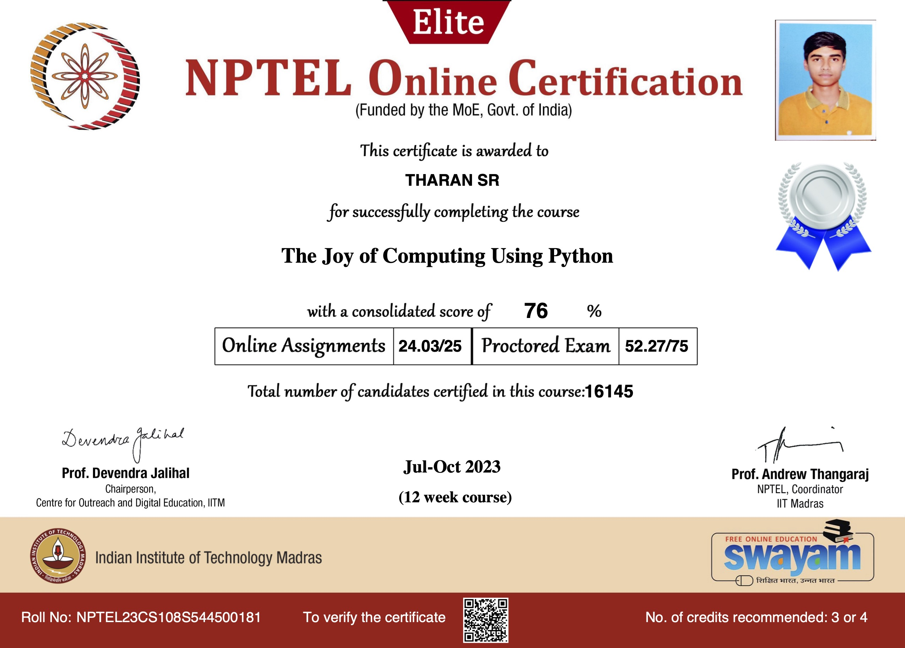
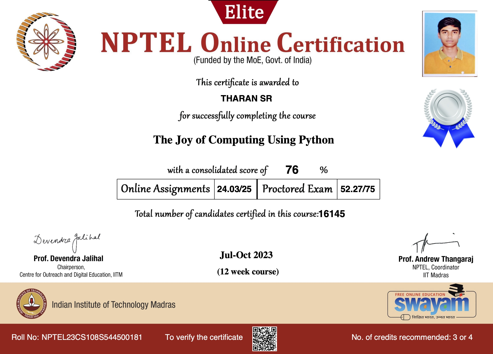

About Me
As an engineer, I possess a strong foundation in technical skills and problem-solving abilities. I am good at competitive Coding, Software Development, Machine Learning and event organising. I assure that I am consistent in learning new skills to enhance my knowledge.
My Certifications
 



Projects
IoT Based Web Application for Industrial Safety:
The Wi-Fi communication medium is utilised in the project, where NodeMCU ESP8266 (SoC) obtains sensor data and forwards it to the internet. The data from the gas sensor, flame sensor, and humidity sensor are projected dynamically on the Web, and the Telegram Bot notifies the user whenever a fire is being detected by the system.
The Wi-Fi communication medium is utilised in the project, where NodeMCU ESP8266 (SoC) obtains sensor data and forwards it to the internet. The data from the gas sensor, flame sensor, and humidity sensor are projected dynamically on the Web, and the Telegram Bot notifies the user whenever a fire is being detected by the system.
ML-based Text Summarisation Software:
Built using Python with NLTK that takes a text paragraph as the input and does abstractive summarisation.
Built using Python with NLTK that takes a text paragraph as the input and does abstractive summarisation.
Image Classification using CNN:
The evolution of AI in generating synthetic images leads to credibility among the real images. Hence, this project helps consumers to identify the real images among the synthetic images with the model accuracy of 94 percent in the test environment.
The evolution of AI in generating synthetic images leads to credibility among the real images. Hence, this project helps consumers to identify the real images among the synthetic images with the model accuracy of 94 percent in the test environment.
Contact Info.